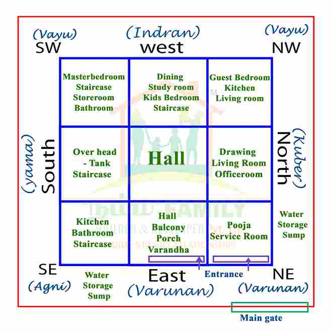

Sample Vastu Home Layout
Below is a sample home layout showing the placement of different rooms according to traditional Vastu principles.

Reference Links
Explore these resources for additional information:
Below is a sample home layout showing the placement of different rooms according to traditional Vastu principles.

Explore these resources for additional information: